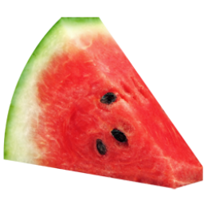

봄빛 식물원은 2017년 12월 개원한 이래 방문한 고객들에게 자연과 더불어 사는 즐거움을 선사하고
자연과의 만남을 통해 삶의 여유와 행복을 제공하고 있습니다.^^
봄빛 식물원 안내
봄빛 식물원 안내
봄빛 식물원 안내
봄빛 식물원 안내
로그인 화면
"부장님은 내 기획서가 쓰레기라고 말했지" 책 소개
- 저자 : 박혁종
- 출판사 : 행복한북클럽
- 가격 : 16,000원
1. 인라인과 블록
(1) 인라인 요소
텍스트1
텍스트2
텍스트3

(2) 블록 요소
이것은 단락입니다.
박스1
박스2
수직 방향 메뉴
네이버
다음
구글
인라인 + 블록 특성(display: inline-block)
박스 1
박스 2
박스 3
박스 4
박스 5
박스 6